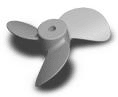

E. The Structural Correlation of Metal Tris Chelates to Propellers
The Left Molecule is Λ-Isomer (Lambda-Isomer)
 Image courtsey of P. Csiszar
Image courtsey of P. CsiszarThe image shown here is that of an impeller (which is used to mix liquids). When this impeller is rotated clockwise on its axis, it moves liquids "downwards": therefore by convention since most machines move impellers in a clockwise direction it is called a "down pumping" impeller.
If you look down from the top of our molecule, it is rotating in the clockwise direction. We hope you can see that the blades of our molecular impeller would push liquid downwards.
A Web Site about Mixing and Impellers
The Right Molecule is the Δ -Isomer (Delta-Isomer)

Image courtsey of P. CsiszarThis image shows the mirror image impeller of the one shown your left. When this impeller is rotated clockwise on its axis, it moves liquids "upwards" therefore is called an "up-pumping" impeller.
Again we hope can see that since our molecular impeller is rotating in the clockwise direction it would push liquid upwards.
Other Sites